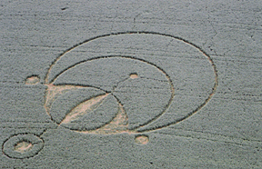
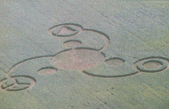
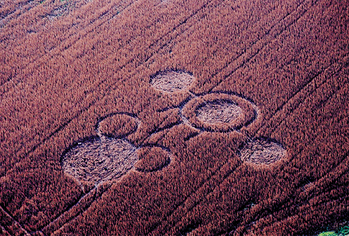

Object photographed 11/2/03 at
Pioneer Park, Independence/Covington, KY



- STRANGEEVENT - Morehead, Kentucky
Frightening screams heard,police search, odd light reported - 11/21/03
- UFOSIGHTING: Trotwood, OH - Oct. 25, 2003
Filed by investigator DonnieBlessing
- Objectsphotographed 11/02 near Cincinnati, OH - Covington, KY
Also report of UFOs seennear Harrison Ave., Western Hills - Oct. 29
- Ohio'sNew Crop Circle and Recent UFO Activity
- RossCty, Ohio Busy with sightings - Huntsburg, Ohio UFO video
Chillicothe Gazette article- NOTE: some reports may be due to FLARES - video could be MOON
- UFOSIGHTING: Hamilton, OH (Oct. 15, 2003)
- "DeerSurveillance" Photo Snaps Ohio Mystery
Upside down diamond, rotatingmutli-colored lights
Ellsberry, OH (Brown County),Sept. 23, 2003
- UFOSIGHTING: Franklin, OH (Sept. 24, 2003)
Pattern of green flashinglights reported to Wright Patterson Air Force Base
- ANOTHEROHIO CROP FORMATION!
Highland County Press -Sept. 28, 2003
- CROPCIRCLE in Flemingsburg, Kentucky (Fleming County)
Photographs courtesy ofCharles Mattox, Flemingsburg Gazette
- "MonsterObject" said to roam Ohio skies
Sighting of massive object,Ghanna, OH (Franklin Cty.), Sept. 22, 2003
- OhioSightings Continue: Tremendous Object Alleged in Southern Ohio
Adams County, Sept. 13,2002 - Triangular UFO with sequence of flashing lights
- Increasein Ohio UFO Activity - Canton, Akron & Proctorville, OH
- News article from Huntington,WVA Herald Dispatch + Bainbridge, OH report
- UPDATE:Proctorville mystery lights may be 'restaurant' skylight
- CROPFORMATION at Peebles, Ohio - pictures
Jeffrey Wilson: "One ofthe most intricate of crop circle formations ever found in the United States"
- UFOSIGHTING: August 22, 2002 - Hillsboro, Ohio
Rotating white lights (reportby Donnie Blessing)
- SiepMound crop formation said to be 'Hoax'
Very 'poor quality,' likelycopy cat - report by LINDA MOULTON HOWE
- OhioClaimant wants money for UFO video
Quality, clarity and contentsaid 'poor'
- UFOSIGHTING: June 2, 2003 - West Chester, Ohio
with report of power failure(Report by Donnie Blessing)
- UFOSIGHTING: MONROE, OHIO (Butler County), June 6, 2003
Report by Donnie Blessing